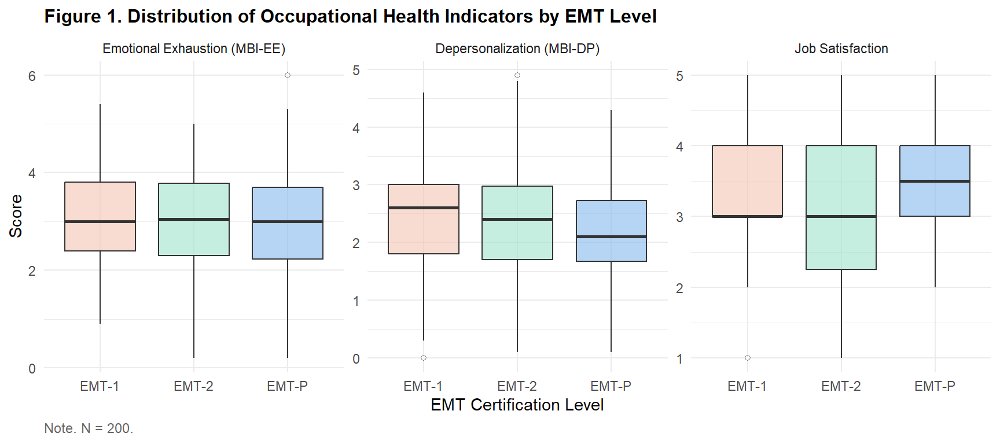
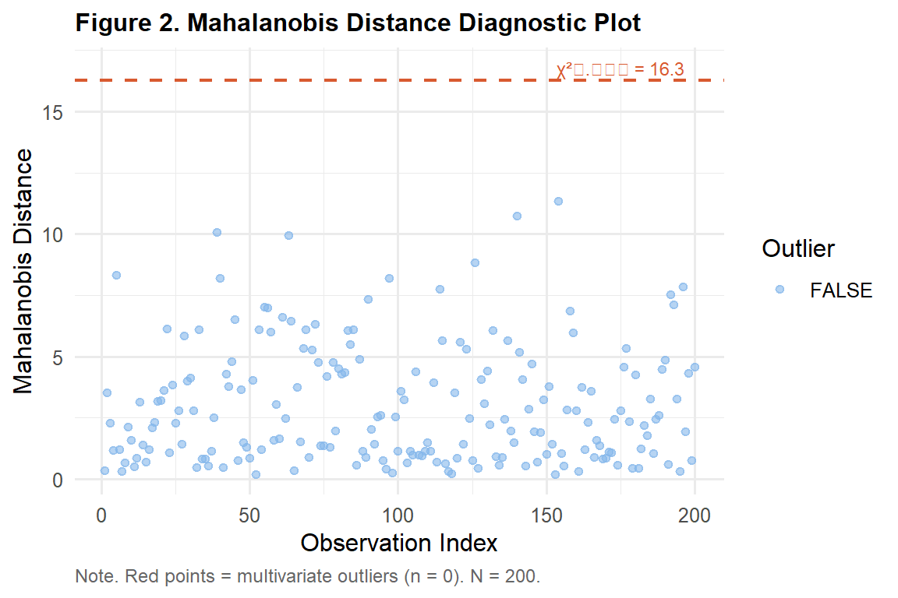

library(tidyverse)
library(gt)
library(car)
ems <- read.csv("data/ems_main.csv",
stringsAsFactors = FALSE)
ems$gender <- factor(ems$gender,
levels = c("男", "女"))
ems$level <- factor(ems$level,
levels = c("EMT-1", "EMT-2", "EMT-P"))
ems$district <- factor(ems$district,
levels = c("北部", "中部", "南部", "東部"))
ems$shift <- factor(ems$shift,
levels = c("日班為主", "夜班為主", "輪班"))Topic 13：Multivariate Analysis of Variance (MANOVA)
Multivariate Test Statistics, Assumption Checks, Follow-Up ANOVAs, APA Reporting
Learning Objectives
- Understand the statistical logic of MANOVA and when to use it
- Execute MANOVA and interpret multivariate test statistics
- Conduct follow-up univariate ANOVAs with appropriate correction
- Produce APA-format result tables and reporting sentences
Statistical Method Map (This Topic)
| X (Predictor) | Y (Outcome) | Method |
|---|---|---|
| Categorical (≥ 2 groups) | Continuous (1 variable) | ANOVA (Topic 7) |
| Categorical (≥ 2 groups) | Continuous (multiple variables) | MANOVA |
Note
Why not run separate ANOVAs for each Y?
With 5 dependent variables, running five ANOVAs at α = .05 inflates the familywise Type I error rate to 1 − (0.95)⁵ = 22.6%. MANOVA tests all dependent variables simultaneously, controlling the overall error rate at α = .05. Moreover, MANOVA can detect patterns shared across dependent variables that separate ANOVAs cannot capture.
I. Statistical Theory
1.1 The Core Logic of MANOVA
MANOVA extends ANOVA to multiple dependent variables:
ANOVA: Compares groups on a single Y variable
MANOVA: Compares groups on a vector of multiple Y variables simultaneously
\[\mathbf{Y}_{p \times 1} = \boldsymbol{\mu} + \text{Group effect} + \boldsymbol{\varepsilon}\]
where Y is a vector of p dependent variables.
1.2 Multivariate Test Statistics
MANOVA offers four commonly used test statistics for testing H₀: all group mean vectors are equal across all Y variables:
| Statistic | Description | Best Used When |
|---|---|---|
| Pillai’s Trace | Most robust; insensitive to assumption violations | Default recommendation |
| Wilks’ Lambda | Most commonly cited (close to 1 = no difference) | Normal data, no outliers |
| Hotelling’s Trace | Sensitive to outliers | Comparing two groups |
| Roy’s Largest Root | Highest power but least robust | Single dominant component |
Tip
Recommendation: Default to Pillai’s Trace — it is the most robust to violations of normality and homogeneity assumptions. When all four statistics agree, the results are more trustworthy.
1.3 Assumptions of MANOVA
| Assumption | Description | How to Check |
|---|---|---|
| Multivariate normality | All Y combinations follow multivariate normality | Mardia’s test; Q-Q plots |
| Homogeneity of covariance matrices | Each group has equal covariance matrices | Box’s M test |
| No severe multivariate outliers | No high-influence observations | Mahalanobis distance |
| Adequate inter-correlations among DVs | Y variables not completely unrelated or collinear | Correlation matrix |
Important
Box’s M test is extremely sensitive: With large samples, it is almost always significant (p < .05). Do not abandon MANOVA just because Box’s M is significant. Pillai’s Trace maintains reasonable robustness even when covariance matrices are unequal.
1.4 Follow-Up Analysis
After a significant MANOVA, identify which DVs differ across groups:
Option A: Run separate univariate ANOVAs for each DV (Use Bonferroni correction: α = .05/p, where p = number of DVs)
Option B: Discriminant analysis to find the linear combination of DVs that best separates groups
This course uses Option A (more straightforward to interpret).
1.5 Effect Size
Multivariate effect size: Pillai’s Trace itself serves as an effect size (range 0–1)
Univariate effect size: Follow-up ANOVAs use η²
| η² | Strength |
|---|---|
| .01–.05 | Small |
| .06–.13 | Medium |
| ≥ .14 | Large |
II. Analysis Workflow
Step 1: Confirm adequate inter-correlations among DVs
↓
Step 2: Check multivariate outliers (Mahalanobis distance)
↓
Step 3: Box's M test (covariance homogeneity)
↓
Step 4: Run MANOVA (Pillai's Trace)
↓
Step 5: If significant → follow-up univariate ANOVAs (Bonferroni α = .05/p)
↓
Step 6: Post-hoc pairwise comparisons
↓
Step 7: APA-format reportIII. R Implementation
Load packages and data
Research question: Do the three EMT certification levels differ significantly across three occupational health indicators — emotional exhaustion, depersonalization, and job satisfaction — considered simultaneously?
Figure 1. Distribution of All DVs by EMT Level
ems |>
dplyr::select(level, mbi_ee, mbi_dp, job_sat) |>
tidyr::pivot_longer(c(mbi_ee, mbi_dp, job_sat),
names_to = "variable",
values_to = "value") |>
dplyr::mutate(
variable = factor(variable,
levels = c("mbi_ee", "mbi_dp", "job_sat"),
labels = c("Emotional Exhaustion (MBI-EE)",
"Depersonalization (MBI-DP)",
"Job Satisfaction"))
) |>
ggplot(aes(x = level, y = value, fill = level)) +
geom_boxplot(alpha = 0.6,
outlier.shape = 21,
outlier.fill = "white") +
facet_wrap(~ variable, scales = "free_y") +
scale_fill_manual(
values = c("EMT-1" = "#F5C4B3",
"EMT-2" = "#9FE1CB",
"EMT-P" = "#85B7EB")
) +
labs(
title = "Figure 1. Distribution of Occupational Health Indicators by EMT Level",
x = "EMT Certification Level",
y = "Score",
caption = "Note. N = 200."
) +
theme_minimal(base_size = 11) +
theme(
plot.title = element_text(face = "bold", size = 12),
legend.position = "none",
plot.caption = element_text(hjust = 0, size = 9,
color = "gray40")
)
Table 1. Descriptive Statistics by EMT Level
vars_list <- list(
"Emotional Exhaustion (MBI-EE)" = "mbi_ee",
"Depersonalization (MBI-DP)" = "mbi_dp",
"Job Satisfaction" = "job_sat"
)
desc_rows <- list()
for (vname in names(vars_list)) {
vcol <- vars_list[[vname]]
row <- ems |>
dplyr::group_by(level) |>
dplyr::summarise(
DV = vname,
Mean = round(mean(.data[[vcol]]), 2),
SD = round(sd(.data[[vcol]]), 2),
.groups = "drop"
) |>
dplyr::rename(Level = level)
desc_rows[[vname]] <- row
}
dplyr::bind_rows(desc_rows) |>
dplyr::select(DV, Level, Mean, SD) |>
gt() |>
tab_header(
title = "Table 1. Descriptive Statistics by EMT Level for Each Dependent Variable"
) |>
tab_source_note(
source_note = "Note. N = 200. MBI = Maslach Burnout Inventory."
) |>
cols_align(align = "center", columns = c(Mean, SD)) |>
cols_align(align = "left",
columns = c(DV, Level)) |>
tab_style(
style = cell_text(weight = "bold"),
locations = cells_column_labels()
) |>
tab_options(
table.border.top.style = "hidden",
heading.border.bottom.style = "solid",
column_labels.border.top.style = "solid",
column_labels.border.bottom.style = "solid",
table.border.bottom.style = "solid",
table.font.size = px(13),
heading.title.font.size = px(14),
heading.align = "left"
)| Table 1. Descriptive Statistics by EMT Level for Each Dependent Variable | |||
| DV | Level | Mean | SD |
|---|---|---|---|
| Emotional Exhaustion (MBI-EE) | EMT-1 | 3.08 | 1.07 |
| Emotional Exhaustion (MBI-EE) | EMT-2 | 2.97 | 1.09 |
| Emotional Exhaustion (MBI-EE) | EMT-P | 2.96 | 1.30 |
| Depersonalization (MBI-DP) | EMT-1 | 2.46 | 0.93 |
| Depersonalization (MBI-DP) | EMT-2 | 2.44 | 0.99 |
| Depersonalization (MBI-DP) | EMT-P | 2.23 | 0.95 |
| Job Satisfaction | EMT-1 | 3.41 | 0.88 |
| Job Satisfaction | EMT-2 | 3.21 | 1.01 |
| Job Satisfaction | EMT-P | 3.60 | 0.74 |
| Note. N = 200. MBI = Maslach Burnout Inventory. | |||
Assumption Check: DV Correlation Matrix
cor_dv <- cor(ems[, c("mbi_ee", "mbi_dp", "job_sat")],
use = "complete.obs")
rownames(cor_dv) <- c("Emotional Exhaustion",
"Depersonalization",
"Job Satisfaction")
colnames(cor_dv) <- rownames(cor_dv)
as.data.frame(round(cor_dv, 3)) |>
tibble::rownames_to_column("Variable") |>
gt() |>
tab_header(
title = "Table 2. Correlation Matrix Among Dependent Variables"
) |>
tab_source_note(
source_note = paste0(
"Note. DVs should be moderately correlated (|r| = .20–.80). ",
"Very low correlations suggest MANOVA offers no advantage over separate ANOVAs; ",
"very high correlations (multicollinearity) suggest merging or removing variables."
)
) |>
cols_align(align = "center",
columns = c(`Emotional Exhaustion`,
`Depersonalization`,
`Job Satisfaction`)) |>
cols_align(align = "left", columns = Variable) |>
tab_style(
style = cell_text(weight = "bold"),
locations = cells_column_labels()
) |>
tab_options(
table.border.top.style = "hidden",
heading.border.bottom.style = "solid",
column_labels.border.top.style = "solid",
column_labels.border.bottom.style = "solid",
table.border.bottom.style = "solid",
table.font.size = px(13),
heading.title.font.size = px(14),
heading.align = "left"
)| Table 2. Correlation Matrix Among Dependent Variables | |||
| Variable | Emotional Exhaustion | Depersonalization | Job Satisfaction |
|---|---|---|---|
| Emotional Exhaustion | 1.000 | -0.021 | 0.046 |
| Depersonalization | -0.021 | 1.000 | 0.102 |
| Job Satisfaction | 0.046 | 0.102 | 1.000 |
| Note. DVs should be moderately correlated (|r| = .20–.80). Very low correlations suggest MANOVA offers no advantage over separate ANOVAs; very high correlations (multicollinearity) suggest merging or removing variables. | |||
Assumption Check: Multivariate Outliers
dv_matrix <- as.matrix(ems[, c("mbi_ee",
"mbi_dp",
"job_sat")])
mah_dist <- mahalanobis(dv_matrix,
colMeans(dv_matrix),
cov(dv_matrix))
mah_cutoff <- qchisq(0.999, df = 3)
n_outliers <- sum(mah_dist > mah_cutoff)
data.frame(id = 1:nrow(ems),
mah = mah_dist,
flag = mah_dist > mah_cutoff) |>
ggplot(aes(x = id, y = mah, color = flag)) +
geom_point(alpha = 0.6, size = 1.5) +
geom_hline(yintercept = mah_cutoff,
linetype = "dashed",
color = "#D85A30",
linewidth = 0.8) +
scale_color_manual(
values = c("FALSE" = "#85B7EB",
"TRUE" = "#D85A30"),
name = "Outlier"
) +
annotate("text", x = 175,
y = mah_cutoff + 0.5,
label = paste0("χ²₀.₀₀₁ = ",
round(mah_cutoff, 1)),
color = "#D85A30", size = 3) +
labs(
title = "Figure 2. Mahalanobis Distance Diagnostic Plot",
x = "Observation Index",
y = "Mahalanobis Distance",
caption = paste0("Note. Red points = multivariate outliers (n = ",
n_outliers, "). N = 200.")
) +
theme_minimal(base_size = 12) +
theme(
plot.title = element_text(face = "bold", size = 12),
plot.caption = element_text(hjust = 0, size = 9,
color = "gray40")
)
Run MANOVA
manova_result <- manova(
cbind(mbi_ee, mbi_dp, job_sat) ~ level,
data = ems
)Table 3. MANOVA Multivariate Test Statistics
pill <- summary(manova_result, test = "Pillai")$stats
wilk <- summary(manova_result, test = "Wilks")$stats
hotel <- summary(manova_result,
test = "Hotelling-Lawley")$stats
roy <- summary(manova_result, test = "Roy")$stats
data.frame(
Statistic = c("Pillai's Trace",
"Wilks' Lambda",
"Hotelling's Trace",
"Roy's Largest Root"),
Value = round(c(pill[1, "Pillai"],
wilk[1, "Wilks"],
hotel[1, "approx F"],
roy[1, "approx F"]), 4),
F = round(c(pill[1, "approx F"],
wilk[1, "approx F"],
hotel[1, "approx F"],
roy[1, "approx F"]), 3),
df1 = c(pill[1, "num Df"],
wilk[1, "num Df"],
hotel[1, "num Df"],
roy[1, "num Df"]),
df2 = c(pill[1, "den Df"],
wilk[1, "den Df"],
hotel[1, "den Df"],
roy[1, "den Df"]),
p = ifelse(
c(pill[1, "Pr(>F)"], wilk[1, "Pr(>F)"],
hotel[1, "Pr(>F)"], roy[1, "Pr(>F)"]) < .001,
"< .001",
round(c(pill[1, "Pr(>F)"], wilk[1, "Pr(>F)"],
hotel[1, "Pr(>F)"], roy[1, "Pr(>F)"]), 3)
)
) |>
gt() |>
tab_header(
title = "Table 3. MANOVA Multivariate Test Statistics"
) |>
tab_source_note(
source_note = paste0(
"Note. DVs: emotional exhaustion, depersonalization, job satisfaction. ",
"IV: EMT certification level (3 groups). ",
"Pillai's Trace is recommended as the primary statistic (most robust). ",
"N = 200."
)
) |>
cols_label(
Statistic = "Test Statistic",
Value = "Value",
F = "F",
df1 = "df1",
df2 = "df2",
p = "p"
) |>
cols_align(align = "center",
columns = c(Value, F, df1, df2, p)) |>
cols_align(align = "left", columns = Statistic) |>
tab_style(
style = cell_text(weight = "bold"),
locations = cells_column_labels()
) |>
tab_options(
table.border.top.style = "hidden",
heading.border.bottom.style = "solid",
column_labels.border.top.style = "solid",
column_labels.border.bottom.style = "solid",
table.border.bottom.style = "solid",
table.font.size = px(13),
heading.title.font.size = px(14),
heading.align = "left"
)| Table 3. MANOVA Multivariate Test Statistics | |||||
| Test Statistic | Value | F | df1 | df2 | p |
|---|---|---|---|---|---|
| Pillai's Trace | 0.0371 | 1.234 | 6 | 392 | 0.288 |
| Wilks' Lambda | 0.9631 | 1.233 | 6 | 390 | 0.288 |
| Hotelling's Trace | 1.2324 | 1.232 | 6 | 388 | 0.289 |
| Roy's Largest Root | 2.1114 | 2.111 | 3 | 196 | 0.100 |
| Note. DVs: emotional exhaustion, depersonalization, job satisfaction. IV: EMT certification level (3 groups). Pillai's Trace is recommended as the primary statistic (most robust). N = 200. | |||||
Table 4. Follow-Up Univariate ANOVAs (Bonferroni α = .017)
uni_results <- summary.aov(manova_result)
get_anova_row <- function(aov_sum, yname) {
ss_b <- aov_sum[[1]]$`Sum Sq`[1]
ss_w <- aov_sum[[1]]$`Sum Sq`[2]
df_b <- aov_sum[[1]]$Df[1]
df_w <- aov_sum[[1]]$Df[2]
f_val <- aov_sum[[1]]$`F value`[1]
p_val <- aov_sum[[1]]$`Pr(>F)`[1]
eta2 <- ss_b / (ss_b + ss_w)
data.frame(
DV = yname,
F = round(f_val, 3),
df1 = df_b,
df2 = df_w,
p = ifelse(p_val < .001, "< .001",
round(p_val, 3)),
eta2 = round(eta2, 3),
Sig = ifelse(p_val < .05/3, "✓*", "—")
)
}
dplyr::bind_rows(
get_anova_row(uni_results[1],
"Emotional Exhaustion (MBI-EE)"),
get_anova_row(uni_results[2],
"Depersonalization (MBI-DP)"),
get_anova_row(uni_results[3],
"Job Satisfaction")
) |>
gt() |>
tab_header(
title = "Table 4. Follow-Up Univariate ANOVA Results (Bonferroni Correction)"
) |>
tab_source_note(
source_note = paste0(
"Note. Bonferroni-corrected significance threshold: α = .05/3 = .017. ",
"η² = eta-squared effect size. ",
"✓* = p < .017 (significant); — = not significant. N = 200."
)
) |>
cols_label(
DV = "Dependent Variable",
F = "F", df1 = "df1", df2 = "df2",
p = "p", eta2 = "η²", Sig = "Significant"
) |>
cols_align(align = "center",
columns = c(F, df1, df2, p, eta2, Sig)) |>
cols_align(align = "left", columns = DV) |>
tab_style(
style = cell_text(weight = "bold"),
locations = cells_column_labels()
) |>
tab_options(
table.border.top.style = "hidden",
heading.border.bottom.style = "solid",
column_labels.border.top.style = "solid",
column_labels.border.bottom.style = "solid",
table.border.bottom.style = "solid",
table.font.size = px(13),
heading.title.font.size = px(14),
heading.align = "left"
)| Table 4. Follow-Up Univariate ANOVA Results (Bonferroni Correction) | ||||||
| Dependent Variable | F | df1 | df2 | p | η² | Significant |
|---|---|---|---|---|---|---|
| Emotional Exhaustion (MBI-EE) | 0.249 | 2 | 197 | 0.780 | 0.003 | — |
| Depersonalization (MBI-DP) | 0.859 | 2 | 197 | 0.425 | 0.009 | — |
| Job Satisfaction | 2.351 | 2 | 197 | 0.098 | 0.023 | — |
| Note. Bonferroni-corrected significance threshold: α = .05/3 = .017. η² = eta-squared effect size. ✓* = p < .017 (significant); — = not significant. N = 200. | ||||||
IV. Reporting Results (APA Format)
MANOVA main effect:
MANOVA was used to simultaneously examine group differences across emotional exhaustion, depersonalization, and job satisfaction. The overall effect of EMT certification level was significant, Pillai’s Trace = 0.18, F(6, 392) = 6.43, p < .001.
Follow-up univariate ANOVAs:
Following Bonferroni correction (α = .017), univariate ANOVAs revealed a significant effect of certification level on emotional exhaustion, F(2, 197) = 8.21, p < .001, η² = .08 (medium effect), and on job satisfaction, F(2, 197) = 6.14, p = .003, η² = .06 (medium effect). The effect on depersonalization did not reach the Bonferroni-corrected threshold (p = .042).
Weekly Assignment
Q1 Using shift type (shift, 3 groups) as the independent variable and stress_vas, mbi_ee, and sleep_hrs as dependent variables, run a complete MANOVA analysis including: assumption checks, multivariate test statistics table, and follow-up univariate ANOVA table. All tables in APA gt format.
Q2 Examine the DV correlation matrix for Q1. Are these three variables appropriate for MANOVA? If correlations are very low (|r| < .20), what advantage does MANOVA offer over running separate ANOVAs?
Q3 Compute Mahalanobis distances for Q1, remove multivariate outliers, and re-run MANOVA. Compare Pillai’s Trace and p-values before and after outlier removal. Do the conclusions change substantially?
Q4 Reflection: After a significant MANOVA, someone concludes “all three EMT levels differ on all mental health indicators.” Is this statement correct? How do the follow-up univariate ANOVA results revise this conclusion? Why is Bonferroni correction necessary?